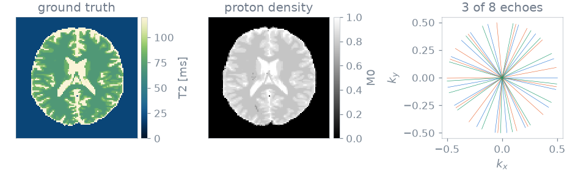
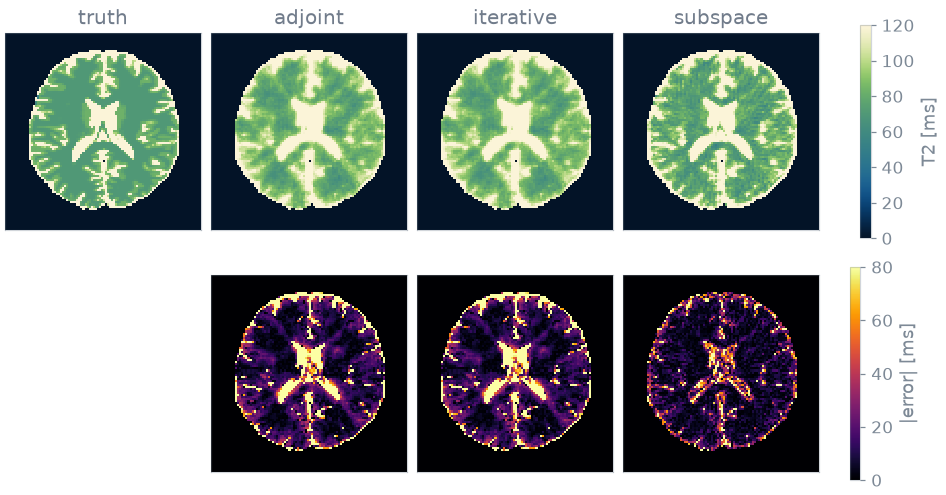

Note
Go to the end to download the full example code or to run this example in your browser via Binder.
Subspace reconstruction#
In this Application you reconstruct one undersampled radial multi-echo spin echo three ways: by gridding, by conjugate gradients on each echo separately, and in a linear subspace. You compare what each costs and how far its T2 map is from the truth.
Quantitative maps are usually obtained in two steps: reconstruct one image per contrast, then fit the maps voxel by voxel. The first step recovers eight images from undersampled data although each voxel has two unknowns. The multi-echo signals span far fewer directions than there are echoes, so you can reconstruct the coefficients along those directions instead. This reduces the number of unknowns and couples the echoes.
Prerequisites: Course lessons 1. Your first simulation.
Setup#
blochsim simulates the signal. The radial trajectory and the non-uniform
Fourier transform come from mri-nufft, and the linear solver and the
LinearPhysics base class come from deepinv. Anything
that provides A and A_adjoint works with the solver.
import time
import mrinufft
import numpy as np
import torch
from deepinv.optim.linear import least_squares
from deepinv.physics import LinearPhysics
from mrinufft.operators.subspace import MRISubspace
from mrinufft.trajectories import initialize_2D_radial
from blochsim.estimators import DictionaryMatcher
from blochsim.simulators import MultiEchoSimulator
The experiment is a 96 x 96 matrix read as 16 radial spokes of 192 samples per echo, with 8 echoes. The temporal basis has rank 3.
SIZE = 96
ECHOES = 8
SPOKES = 16
SAMPLES = 192
RANK = 3
# The GPU transform is used when it is installed and usable, and the simulation
# follows it so that the images and the operator are on one device.
on_gpu = torch.cuda.is_available() and mrinufft.check_backend("cufinufft")
device = "cuda" if on_gpu else "cpu"
backend = "cufinufft" if on_gpu else "finufft"
Phantom#
The phantom is BrainWeb subject 0, slice 90, resampled to 96 x 96. BrainWeb gives fuzzy tissue memberships, not labels. Weighting the tabulated T2 and proton density of each tissue by its membership gives maps in which mixed voxels lie between the pure tissues, known everywhere.
Sequence and sampling#
The sequence is a multi-echo spin echo with eight echoes from 10 to 150 ms. Simulating it over the T2 map gives one image per echo, scaled by the proton density:
TE = torch.linspace(10.0, 150.0, ECHOES)
simulator = MultiEchoSimulator(TE=TE)
images = (
torch.as_tensor(simulator.to(device).simulate(T2=T2_true)).to(torch.complex64)
* M0_true.to(torch.complex64)[..., None]
)
Each echo is sampled by 16 radial spokes, rotated by the golden angle from the echo before, so the echoes together cover k-space more evenly than any one does. 16 spokes across a 96-sample matrix is about ninefold undersampling, which is where the reconstructions differ.
The encoding operator maps the images of all echoes to k-space, with one trajectory per echo. It wraps mri-nufft, as a real pipeline would wrap its own trajectory, density compensation and coils:
trajectory = (
initialize_2D_radial(SPOKES * ECHOES, SAMPLES, tilt="golden")
.astype(np.float32)
.reshape(ECHOES, SPOKES * SAMPLES, 2)
)
build = mrinufft.get_operator(backend)
per_echo = [
build(trajectory[echo], (SIZE, SIZE), n_coils=1, squeeze_dims=False, density=True)
for echo in range(ECHOES)
]
class RadialEncoding(LinearPhysics):
"""``(batch, echoes, x, y)`` images to k-space, one trajectory per echo."""
def A(self, x, **kwargs):
return torch.stack(
[per_echo[e].op(x[:, e][:, None])[:, 0] for e in range(ECHOES)], 1
)
def A_adjoint(self, y, **kwargs):
return torch.stack(
[per_echo[e].adj_op(y[:, e][:, None])[:, 0] for e in range(ECHOES)], 1
)
encoding = RadialEncoding()
kspace = encoding.A(images.movedim(-1, 0)[None])
Scale the k-space so that the gridded image peaks at one. The damping weights below are then numbers about the model, not about the receiver gain:

16 spokes per echo: 9x undersampled
The maps are what every reconstruction below recovers, and the spokes are all that is measured of them.
Temporal basis#
A DictionaryMatcher serves every reconstruction below as
the estimator that turns images into T2. Giving fit a rank fits a temporal
basis to the simulated signals of a grid of T2 values. Three directions hold
essentially all of an eight-echo exponential decay:
grid = torch.linspace(20.0, 400.0, 500)
mapping = DictionaryMatcher(simulator).fit(T2=grid, M0=1.0, rank=RANK, seed=0)
print(f"rank {RANK} of {ECHOES} keeps {mapping.subspace.retained:.6f} of the signal")
rank 3 of 8 keeps 0.999992 of the signal
retained is the fraction of the signal the basis
keeps, so you choose the rank from it before projecting anything.
Reconstruction contrast by contrast#
The conventional route has two forms. Gridding is the adjoint with density compensation: one pass, smooth, biased. The iterative form solves a least-squares problem for each echo, as CG-SENSE does. Both are followed by the same estimator, so the comparison is between reconstructions.
deepinv’s gamma is the inverse regularization weight, so a smaller value
regularizes harder. Each route was given the best of a short sweep, not shown.
adjoint per echo 0.0s T2 error 30.6 ms (20.6%)
iterative per echo 0.1s T2 error 30.7 ms (20.6%)
tensor([[ 52.7455, 61.8838, 58.0762, ..., 96.9138, 74.0681, 63.4068],
[ 47.4148, 49.6994, 50.4609, ..., 91.5832, 66.4529, 77.8758],
[ 52.7455, 60.3607, 74.0681, ..., 76.3527, 71.0220, 78.6373],
...,
[ 71.0220, 80.1603, 105.2906, ..., 74.0681, 51.9840, 64.1683],
[103.0060, 122.8056, 128.1363, ..., 93.1062, 64.9299, 56.5531],
[122.0441, 109.0982, 111.3828, ..., 82.4449, 82.4449, 69.4990]])
Iterating does not reduce the error. 16 spokes of 192 samples are 3072 measurements per echo against 9216 unknowns, so each echo alone is underdetermined, and the density-weighted adjoint is already the solution the iterations converge to. The gain has to come from a constraint across the echoes.
Reconstruction in the subspace#
Expressing the signal in the temporal basis reduces the unknowns from 8 echo images to 3 coefficient images and couples the echoes. The problem has 24576 measurements for 27648 unknowns. It remains linear, so it has a single minimum and needs no starting guess.
mapping.subspace.modes gives the basis in the layout mri-nufft’s subspace
operator reads. One operator over the trajectories of all echoes replaces the
per-echo operators, and the solver is the one the gridded route used.
from_coefficients turns the coefficients into maps without projecting a
second time.
flat = build(
trajectory.reshape(-1, 2), (SIZE, SIZE), n_coils=1, squeeze_dims=False, density=True
)
projected = MRISubspace(flat, mapping.subspace.modes.to(device))
projected.n_batchs, projected.n_coils = 1, 1
coefficients = least_squares(
A=projected.op,
AT=projected.adj_op,
y=kspace[:, :, None, :],
gamma=10.0,
solver="CG",
max_iter=40,
)
linear = mapping.from_coefficients(coefficients[0][:, 0].movedim(0, -1))["T2"]
iterative subspace 0.4s T2 error 16.9 ms (13.1%)
tensor([[ 51.9840, 73.3066, 67.2144, ..., 86.2525, 60.3607, 35.2305],
[ 20.0000, 23.0461, 30.6613, ..., 102.2445, 41.3226, 70.2605],
[ 30.6613, 66.4529, 121.2826, ..., 64.1683, 65.6914, 71.7836],
...,
[ 33.7074, 20.0000, 105.2906, ..., 76.3527, 50.4609, 81.6834],
[ 82.4449, 160.8818, 157.0742, ..., 110.6212, 50.4609, 38.2766],
[ 93.1062, 84.7295, 110.6212, ..., 115.9519, 205.0501, 119.7595]])
Maps#
The T2 maps use a perceptually uniform colormap reserved for T2, so that a T2 map is never read as a T1 map [1]. The subspace is the only route that constrains the echoes against one another. On the CPU run of this page its mean error is about 55% of either per-echo route’s (13% against 21%), at a longer reconstruction time than the iterative per-echo route; the timings printed above depend on the hardware.

Limits#
Eight echoes of one exponential is the case a subspace handles best: three directions hold essentially all of the signal. Two things break that.
A phase-modulated signal, such as a balanced steady state through a field map or a fingerprinting train with varying RF phase, needs tens of components. The coefficient problem then is no smaller than the image problem.
A model with several parameters has no small basis, because the basis must span the product of their ranges.
Both cases require the model inside the operator. That is the nonlinear route of Nonlinear inversion from k-space.
References#
Specification#
What this Application did, stated the way you would ask an agent for it:
With blochsim, mri-nufft and deepinv, simulate an 8-echo multi-echo spin
echo (TE 10 to 150 ms) on a BrainWeb T2 phantom of 96 x 96 voxels. Sample
each echo with 16 golden-angle radial spokes of 192 samples. Fit a rank-3
temporal basis with a DictionaryMatcher and check how much signal it keeps.
Reconstruct T2 by gridding, by CG per echo, and by CG on the subspace
coefficients. Report the time and the mean T2 error over the brain of each.
Total running time of the script: (0 minutes 1.907 seconds)